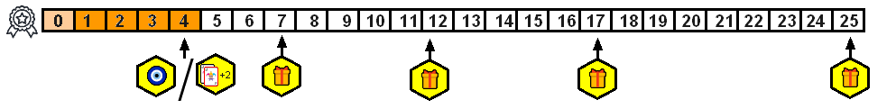

Tabuleiro Principal
Esse conteudo serve como maunal de regras e iremos abordar todas elas aqui no site.
O jogo contem as seguintes funções:
- Trilha do Poder
- Trilha da Reputação
- Exibição (local onde ficarão unidades aguardando serem recrutadas)
- Descarte / Cemiterio
- Mapa do jogo (mapa feito em hexagonos contendo os biomas existentes no jogo
- Assentamentos (construções que unidades irão precisar para serem jogadas)
- Taxa / Imposto
- Area do Jogador (contendo trabalhadores, moedas, pinos e cubinhos de cores para cada jogador)
- Area de Manufatura

Trilha do Poder
Regras realicionadas a Trilha do Poder
- Coloque 1 pino de avanço em cada espaço 0 de cada torre
- Toda vez que uma habilidade ou efeito fizer com que avance casas nesta trilha, escolha umas das 4 torres e avance um total equivalente.
- Sempre que alcançar espaços marcados com algum bônus voce coleta o token daquela casa na trilha.
- Bonus de hexagonos Amarelo voce deve realizar imediatamente
- Bonus de hexagonos Verde voce deve realizar no momento que desejar (guarde o token e descarte quando for usar)
- Mais abaixo iremos falar individualmente sobre cada bônus

Trilha da Reputação
Falaremos sobre regras relacionadas a esta trilha
- A trilha começa no ponto 0, coloque seu pino de avanaço neste espaço
- Toda vez que uma habilidade ou efeito fizer com que avance casas nesta trilha, avance um total equivalente.
- Assim como a trilha do poder aqui temos beneficios conforme os avanços
- Ao acançar a casa 4 o jogador deve escolher entre ganha +1 PA ou aumentar o limite de cartas não em +2 e comprar 2 cartas
- A casa de numero 4 é o unico local onde todos os jogadores recebem bonus ao alcançar.
- Nas demais casas teremos sempre 3 beneficios, dentre 1 deles fixo (moedas de ouro) e outros 2 aleatorios
- O primeiro jogador ao alcançar essas casas deve escolher qual bonus deseja receber e retirar o token representante
- A trilha da reputação esta vinculada tambem a Exibição (veja abaixo)
Exibição / Recrutamento
Local especifico para unidades descartadas
- Sempre que uma carta de unidade for descartada, ela deve primeiramente passar por toda essa trilha.
- AS cartas entram sempre da esquerda para a direita "empurrando" as demais para frente
- Quando a exibição estiver completa e mais cartas forem entrando, coloque-as no descarte
- É possivel jogar cartas de unidades diretamente da exibição no seu campo (caso tenho assentamentos apropriados)
- Temos 8 espaços para unidades aqui e cada um deles marca diferentes valores para ser jogado
- Haverá sempre um adicional em Moedas de Ouro para ser jogar diretamente
- Quanto mais proximo do descarta uma unidade estiver, menor sera a quantidade de PA para se jogar
- Para jogar unidades diretamente da exibição verifique seu avanço na Trilha da Reputação antes
Descarte e Cemiterio
As cartas podem ser utilizadas mais vezes
- Quando uma habilidae ou efeito disser para descartar aqui é o local (descarte)
- Algumas habilidades envolvem pegar cartas do descarte e/ou cemiterio
- Descarte e Cemiterio são acessiveis ao jogadores, eles podem olhar a qualquer momento que desejarem
- Caso uma unidade morra, coloque-a no cemiterio (ou outro lugar caso a carta diga o contrario)
Assentamtos
Construa primeiro, jogue unidades depois
- Durante seu turno voce pode escolher a ação de "Construir Assentamento", gastando PA e Moedas de Ouro
- Para acomodar unidades em jogo, o jogador precisa antes criar assentamentos de tamanho que as abrigam
- Gaste um total de 2 PA e um valor em Moedas de Ouro igual 2x o tamanho do assentamento que deseja constuir, 2 PO para assentamentos de tamanho 1, 4 PO para tamanhos de 2 e etc
- Escolha atentamente onde construir seus assentamentos pois construir seu proximo deverá estar adjacente de algum outro
- Repare nos icones de biomas das cartas de unidades que voce quer jogar, uma unidade com 2 simbolos de um determinado bioma significa que voce precisa construri um assentamento de tamanho 2 em um bioma especifico daquela unidade
- Exitem 5 tamanhos de assentamentos normais e 1 especial
- Quando for construir um assentamento normal, coloque-o dentro do espaço hexagono do mapa contendo o bioma desejado
- O gasto para criar um assentamento especial é de 2 PA e 6 PO mais 1 recurso de cada bioma ao qual o assentamento esta sendo colocado
- Seguindo o exemplo da "IMAGEM 2" para construir o assentamento especial, ojogador "X" precisou gasar 2 PA e 6 PO e um total de 1 recurso de cada bioma (1 essencia abissal, 1 madeira e 1 gema). Iremos falar sobre esses recursos mais abaixo
- O joador pode realizar esta ação multiplas vezes caso tenha todos os recursos para cada uma delas